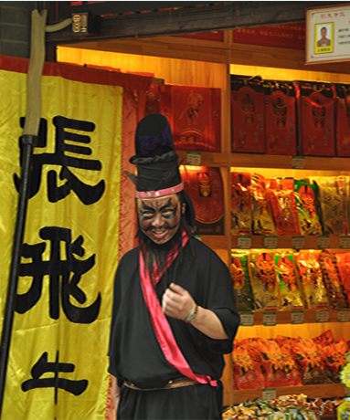
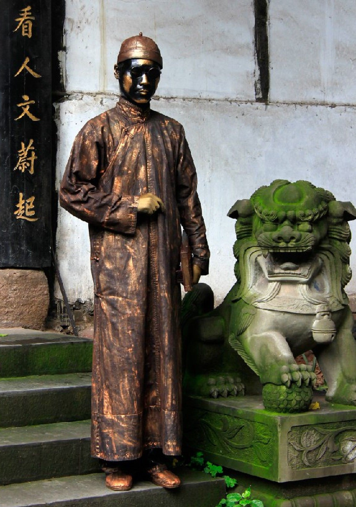
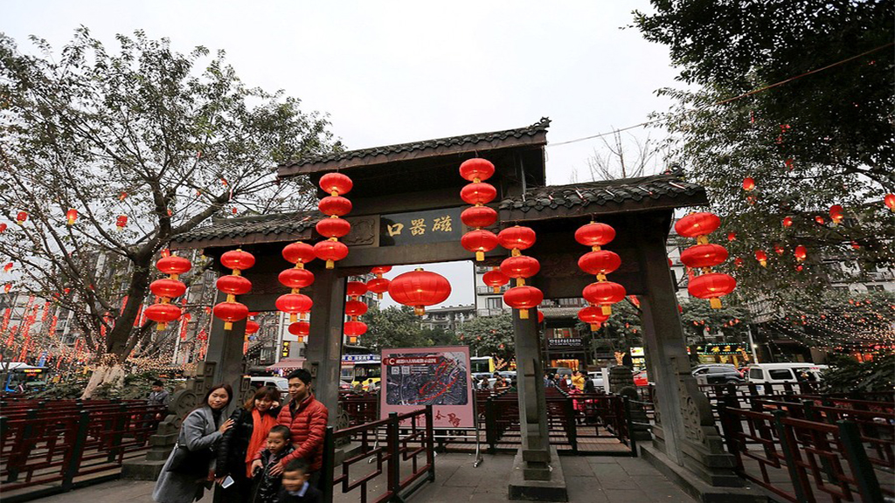

磁器口旅游概述
磁器口，以出产瓷器而得名。在1918年地方商绅集资在青草坡创建了新工艺制瓷的“蜀瓷厂”，瓷器质地很好，品种繁多，名声渐大，产品远销省内外。渐渐地“磁器口”名代替了“龙隐镇”。现已发现古窑遗址20余处。古镇磁器口有12条街巷，街道两旁大多是明清风格的建筑，地面由石板铺成…



磁器口古镇位于重庆市沙坪坝区嘉陵江畔，始建于宋代，东临嘉陵江，南接沙坪坝，西界童家桥，北靠石井坡，距主城区3公里，是历经千年变迁而保存至今的重庆市重点保护传统街。
磁器口古镇拥有"一江两溪三山四街"的独特地貌。凤凰、清水双溪潆洄并出，嘉陵江由北而奔，江宽岸阔，水波不兴，实为天然良巷。作为嘉陵江边重要的水陆码头，曾经"白日里千人拱手，入夜后万盏明灯"繁盛一时，被赞誉为"小重庆"，是重温老重庆旧梦的好去处。
磁器口是重庆市沙坪坝区一个古镇的称谓。它东临嘉陵江，南接沙坪坝，西界童家桥，北靠石井坡。磁器口总面积约1.18平方公里，人口1.8万人。1998年磁器口古镇被国务院确定为重庆市重点保护传统街，2010年入选中国历史文化名街。
一条石板路，千年磁器口。已有1800年的磁器口素有巴渝第一古镇之称，保存了较为完整的古建。古镇有古朴粗犷的巴渝遗风，有古风犹存的茶馆、有历史传承的码头文化;有佛、道、儒三教并存的九宫十八庙;有正气凛然的红岩志士抗战遗址;有独具特色的川剧清唱、火龙表演，有工艺独特、品种繁多的传统旅游产品，有享誉四方的毛血旺、千张皮、椒盐花生等饮食三宝。